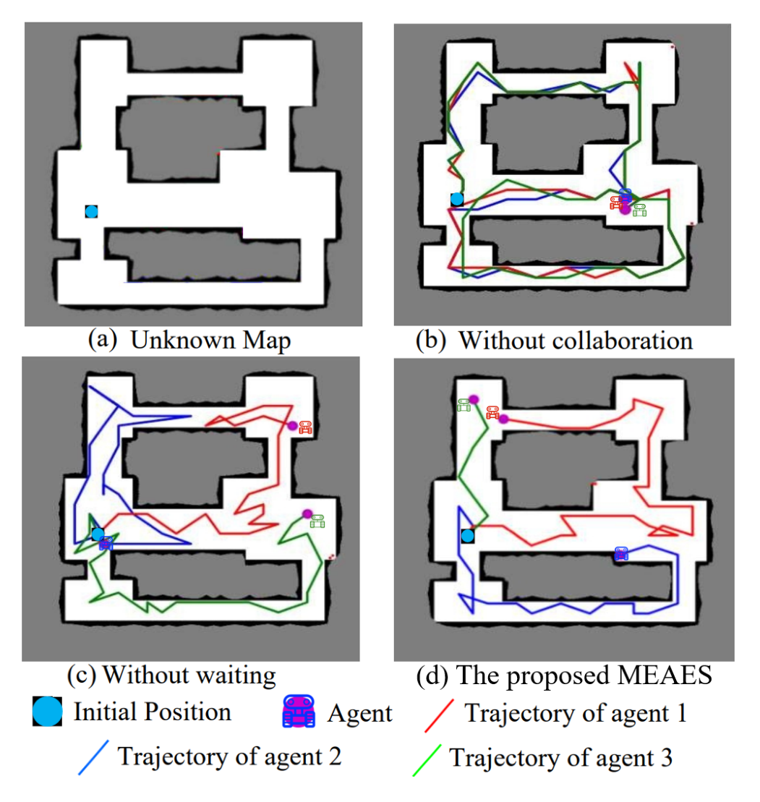
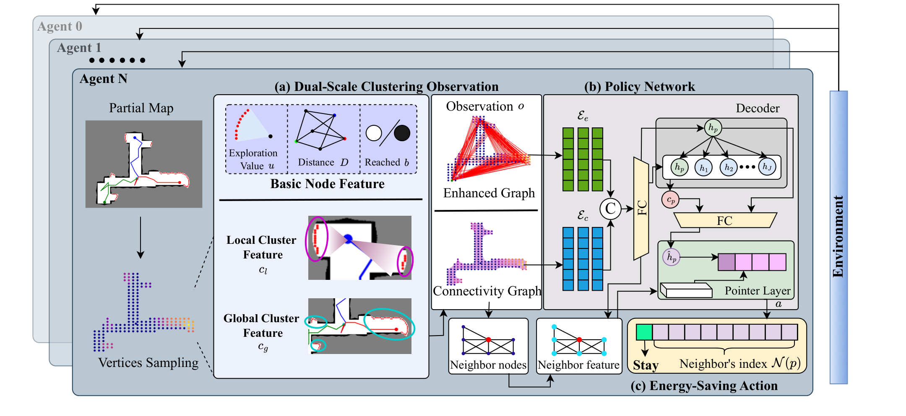
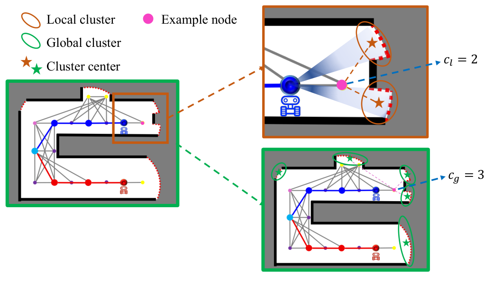
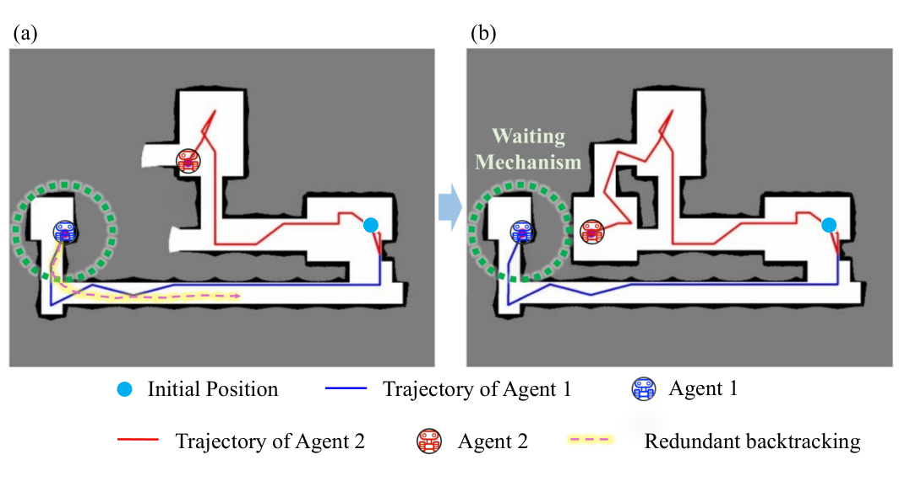
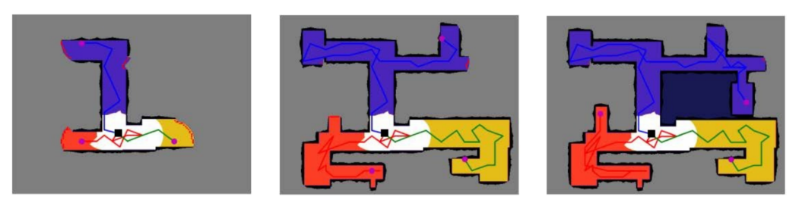
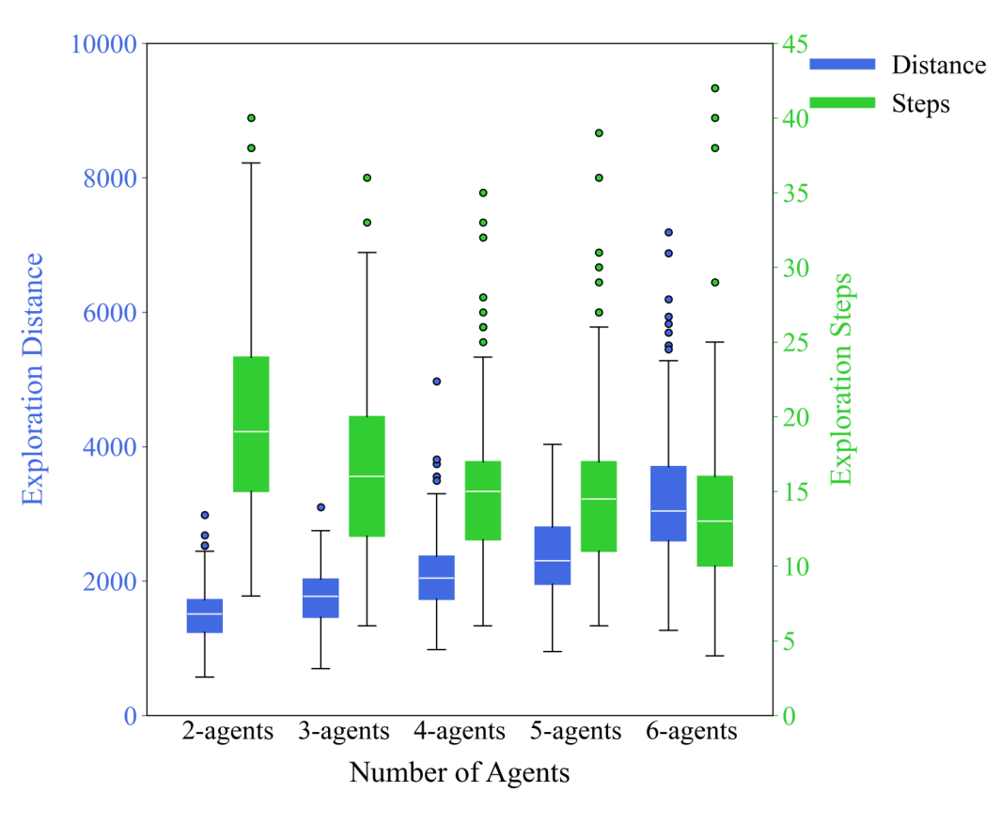
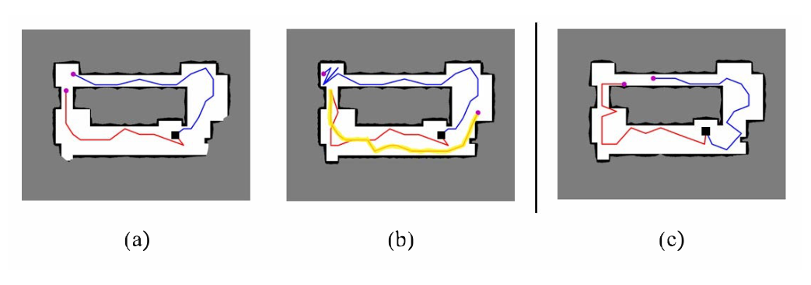
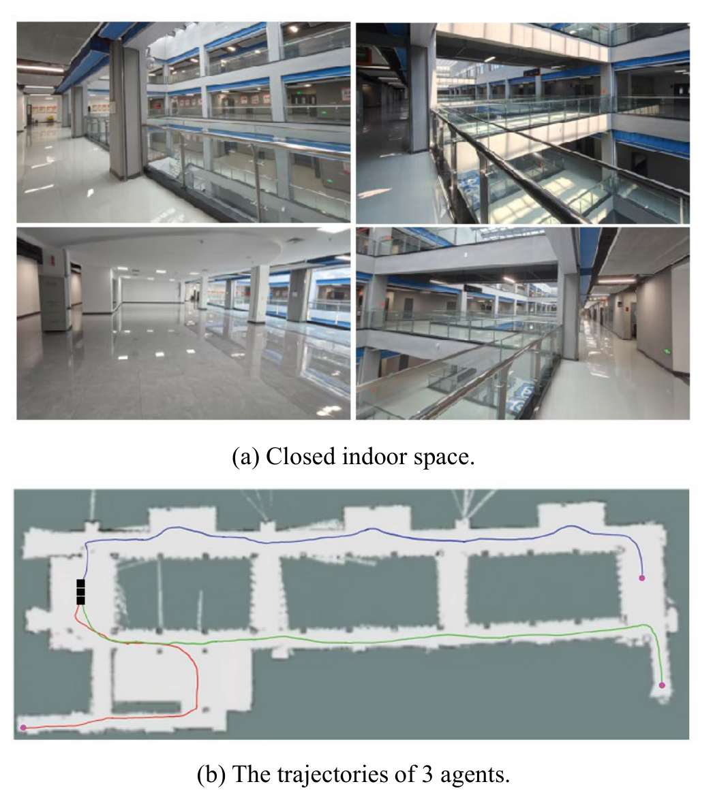

Less Repetition, Less Energy Cost, A Reinforcement Learning-based Multi-agent Energy-saving Autonomous Exploration System
引言
一群机器人在未知区域里执行任务，比如灾后搜救、环境巡检，能量是它们最宝贵的资源。理想情况下，每个机器人应该"各走各的路"，用最短的总路程把整片区域探完；但现实中由于环境只能被局部观测，机器人之间往往协作不足，要么挤在同一个分支里反复探索，要么为了"帮忙"跑一趟早已被别人探完的区域。结果就是——重复探索带来额外的能量消耗。更糟的是，如果采用集中式架构，单个机器人失效还可能直接拖垮整个系统。
我们的论文《Less Repetition, Less Energy Cost: A Reinforcement Learning-based Multi-agent Energy-saving Autonomous Exploration System》提出了一套基于强化学习的分布式多智能体节能自主探索系统 MEAES（Multi-agent Energy-saving Autonomous Exploration System），发表在《IEEE Transactions on Neural Networks and Learning Systems》上。MEAES 从"少重复、少能耗"出发，通过双尺度聚类观测、节能动作机制和消耗-探索平衡的训练框架，在保持探索成功率的同时显著缩短了整体探索路径。本文将介绍它的设计动机、技术细节和实验结论。

为什么"少走冤枉路"这么难？
多智能体自主探索本身就是一个"既要覆盖、又要省油"的权衡问题，论文把它归纳为三个挑战：
- 观测受限：机器人只能看到局部地图，很难推断全局态势，容易出现路径冲突和探索盲区。
- 能量有限：如何在多机器人之间平衡任务分配与能量消耗，目前并没有被完全解决。
- 协作困难：去中心化智能体之间的有效协作，是协同感知与决策的核心难点。
传统方法（前沿法、路径规划）通常让每个机器人根据局部观测贪心地最大化覆盖或信息增益，缺乏长期规划。在分支结构复杂的环境中（图 1(b)），这种短视行为会让多个机器人反复进入同一分支；而常见的"任务完成后去支援其他区域"策略（图 1©），又常常因为目标区域在支援者到达前就已经被探索完，反而制造了新的能量浪费。
因此，核心挑战可以概括为：在最大化探索覆盖率的同时，最小化所有智能体的总行驶距离，规划出长期的、节能的轨迹。MEAES 正是围绕这一点展开的，主要有四项贡献：分布式架构、DSCO 观测、EA 动作机制、CEBF 训练框架。
MEAES 系统详解
MEAES 是一个完全分布式的框架：每个智能体独立、异步地做决策，即使某个智能体掉线，其余智能体仍能继续工作，不存在单点故障；相比集中式执行框架，它的参数量更小、策略网络训练时间也大幅缩短。

1. 双尺度聚类观测（DSCO）
要让智能体"省着走"，首先得让它看得更清楚。DSCO 把环境建模为连接图 ：节点 在可通行区域均匀采样，每个节点与最近的 个邻居相连，且只有当两点间线段不穿过障碍物或未知区域时才建立边。随着探索推进，图结构随时同步更新。
每个节点携带一组手工设计的特征：坐标特征 、探索价值 （该节点可观测到的前沿数量）、距离特征 （到所有智能体的 N 维距离向量）、到达标志 、局部聚类特征 、全局聚类特征 。即
其中 表示向量拼接。
为什么单靠探索价值 不够？论文给了两个典型反例：结构复杂度差异很大的两个节点可能拥有几乎相同的 ，但其中一个明显需要更多探索资源；而位于角落的少量前沿会让附近节点 值偏低，被模型忽略后反而引发大量冗余回溯。为此，DSCO 显式地编码了环境的结构信息：
- 局部聚类特征 ：对传感器范围内的前沿做密度聚类（DBSCAN），以聚类中心数量作为该区域分支复杂度的代理；
- 全局聚类特征 ：对整个图上的前沿做聚类，只保留位于两倍传感器范围内、且 A* 距离低于阈值的聚类中心，用于刻画长期探索倾向。
两者构成时空互补： 对局部波动敏感， 提供稳定的全局引导，同时过滤掉无关的远处聚类，避免全局信息过载。

观测的第二个组成部分是增强图 ：它与连接图共享同一节点集和特征，但边集不同——连接图刻画可通行区域的几何连通性，增强图则引入"协作导向"的边，将当前智能体所在节点互相全连接，并把每个智能体节点连接到所有探索价值为正的节点（），以此强化智能体之间以及智能体与高价值区域之间的信息交换。
2. 策略网络
策略网络采用智能体间的注意力机制，包含两个编码器 、 和一个解码器 。由于两张图的边集不同，两个编码器分别提取各自的结构信息：先做线性投影得到初始嵌入，再通过逐层堆叠的带掩码多头自注意力传播信息——掩码保证节点只能关注到当前图中与它相连的邻居，而多层堆叠又让信息能够越过直接邻居，逐步捕获全局结构上下文。两个编码器的输出拼接后投影回 维，得到增强后的节点特征。
解码器则先以当前节点特征为 query、以所有节点特征为 key/value 做一次注意力，得到全局上下文 ，与自身特征拼接后更新当前节点表示；最后送入 Pointer Layer（同样以注意力实现），在邻居候选节点集合上输出动作概率分布：
其中 是候选邻居节点上的概率向量。这种"选节点"式的动作空间，让动作天然对应图结构上的目标点。
3. 节能动作（EA）
即使观测和决策都很聪明，仍然会遇到"任务分配不均"的情况：某个智能体早早探完了自己的区域，于是继续奔向剩下的未知区域，结果又是无谓的移动。为此，论文在原始动作空间上增加了一个 stay 动作：
智能体在评估环境条件和队友状态后，如果判断自己的立即介入对剩余任务没有必要，就可以原地等待，而不是盲目加入其他区域的探索。

4. 消耗-探索平衡训练框架（CEBF）
最后一块拼图是奖励与训练策略。每个智能体的奖励由四项组成：
- 探索奖励 ：智能体移动后新发现的前沿数量，鼓励揭示新的未知边界；
- 距离惩罚 ：衡量本次移动的行驶距离，抑制无效运动；
- 区域重叠惩罚 ：当两个智能体的传感器覆盖区域重叠时施加惩罚，促使它们探索不同分支；
- 完成奖励 ：任务完成时给予的固定奖励。
总奖励为
关键在于距离惩罚系数 不是固定的：训练初期用较小的 保证探索可行性（避免等待动作过早激活、拖慢收敛），随着训练稳定逐渐增大以施加更强的距离约束；一旦探索性能下降，再回调 。这种课程式（easy-to-hard）的调整让训练目标从"先学会探索"平滑过渡到"再优化能耗"，同时也让收敛更稳定。
论文的消融很直观地说明了这一点： 时成功率达到 100%，但没有距离约束导致轨迹严重重叠，EIOU 高达 0.68；固定 时 EIOU 降到 0.26，成功率却跌到 81%；而动态调整 的方案兼顾两者，取得 99% 成功率与 0.23 的 EIOU。
实验验证
实验设置与指标
实验在 2D 占据栅格地图上进行，地图尺寸 ，智能体搭载扫描范围 的传感器；全图均匀采样 1024 个点，保留落在可通行区域的点作为图节点，每个节点连接 个最近邻；编码器包含 6 层多头注意力，训练基于 SAC 框架，使用 2 张 NVIDIA RTX 3090 与 Ray 做分布式训练。智能体数量设为 ，评测则扩展到 2~6 个。
评价指标分两类：
- 节能指标： 与 ，分别表示覆盖率达到 90% 和 99% 时所有智能体的总行驶距离，越小说明越省能量（实践中以 99% 覆盖作为任务完成）；
- 协作指标：论文在原有重叠率 的基础上提出 EIOU，即"至少被两个机器人探索过的像素并集"与"所有机器人探索区域并集"之比，取值 0~1，越低说明互补性越好；同时引入独立探索区域的标准差 作为补充，用于识别任务分配严重不均等 EIOU 无法反映的特殊情况——只有当 EIOU 与 都低时，协作质量才算真正好。
定量对比
对比方法共 8 个：Nearest、RRT Frontier、Potential Field、RACER、ANS、IR2、CRL 以及我们之前的 COMAE。测试集为 5 张随机生成的迷宫地图和 Explore-Bench 的 6 个场景，分别在 2 机器人和 3 机器人设置下评测。
在迷宫地图上，MEAES 在全部 5 张地图上都取得了更短的探索距离、更低的重叠率和更小的方差。例如 Map3 的 2 机器人设置下，MEAES 的 为 129，COMAE 为 142，CRL 为 157；EIOU 上 MEAES 为 0.16，COMAE 为 0.31，CRL 为 0.33。Explore-Bench 更强调跨风格的零样本迁移（训练时只见过随机迷宫），MEAES 同样在 2/3 机器人设置下同时保持较低的距离与 EIOU，说明它不仅在表示层面泛化，在协作层面也减少了未见环境中的冗余。
训练性能
与另外两种基于强化学习的多智能体探索方法相比，MEAES 收敛更快，且稳定后的 明显更低；EIOU 曲线下降最快、收敛值最低，训练波动也更小。论文把这归因于两点：分布式框架加速了收敛，CEBF 则在探索效率与能耗之间维持了稳定的平衡。
探索过程可视化

可以看到，冗余覆盖主要聚集在智能体的初始位置附近，只占整张地图极小的一部分；三块彩色区域的空间分布相当均衡，说明任务分配是公平的。更值得注意的是，当红、蓝轨迹的智能体还在探索时，绿色轨迹的智能体已经停止了移动——它判断出剩余任务由其他智能体完成即可，于是激活了等待机制。这正是 EA 在真实决策过程中的体现。
不同智能体数量

论文把框架扩展到 4、5、6 个智能体。整体上 MEAES 在各种配置下都保持高效；但当智能体数量达到 5 个及以上时，受实验场地空间限制与机器人密度增加的影响，完成任务时间的下降变得边际，同时探索距离略有上升。因此在实际场景中，需要在智能体数量与空间尺度之间取得平衡。
消融研究
论文在 200 张随机生成的迷宫地图上，将测试环境分为 Mixed、Easy、Medium、Complex 四组，分别验证等待机制（WM）、局部聚类（LC）、全局聚类（GC）三个模块的贡献。结果显示，随着模块逐个加入， 与 EIOU 稳步下降；其中 GC 带来的长期方向性引导尤为关键——只有 LC 时，智能体缺乏长期决策能力，会偶尔回撤产生无谓能耗，而加入 GC 后回撤明显减少。

以 2 智能体为例，Mixed 场景下 从 1399（naive）逐步降到 1232（+WM）、1230（+WM+LC）、1213（+WM+LC+GC）；Complex 场景下则从 1734 降到 1532。三个模块的组合显著改善了协作并降低了探索能耗。
真实环境验证

作者把 MEAES 部署到 3 台轮式机器人上，每台配备 10 米探测范围的 2D LiDAR 与 NVIDIA Jetson AGX Orin 计算平台，实验场地是约 、包含大量走廊与复杂结构的封闭室内空间。机器人使用 GMapping 从激光观测构建 2D 占据栅格地图用于后续规划。实验中三个智能体表现出良好的协作性：红色轨迹的智能体在完成自己的探索任务后主动激活了等待机制，有效避免了冗余探索。
结论
MEAES 通过双尺度聚类观测（DSCO）、节能动作机制（EA）与消耗-探索平衡训练框架（CEBF），让多智能体在保持探索成功率的同时减少重复探索与总行驶距离。分布式架构带来的另一层好处是鲁棒性：某个智能体失效不会导致整个系统崩溃，而且能适应不同的队伍规模与零样本场景。
从两篇工作（COMAE → MEAES）连起来看，作者的思路演进也很清晰：COMAE 关注的是"如何协作得更聪明"，用协作导向观测和注意力序列网络解决冗余；MEAES 则在此基础上把"能量"明确写进了优化目标——用双尺度聚类特征解决"往哪探索更有长期价值"，用等待动作解决"什么时候不该动"，再用课程式奖励解决"先学会走路、再学会省油"。对实际部署来说，这种"停止也是一种决策"的建模方式，可能比单纯追求覆盖率更贴近工程需求。